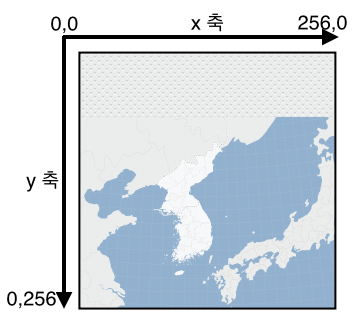
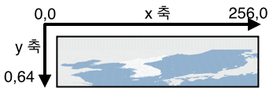

Projections and Coordinate Systems
A map projection (Projection) is to represent the curved surface of the earth on a flat map, defining how to transform latitude and longitude coordinates into coordinates on a projected map.
The NAVER Map API v3 provides two objects for projections.
- Projection: Defines how to transform map coordinates to plane coordinates.
- MapSystemProjection: Defines how to place tiles, convert between coordinates and calculate a distance between two coordinates, by using the
Projectionobject.
The default map types (MapType) provided by the NAVER Maps API v3 use NAVER’s own projection, UTMK_NAVER, which is a transformed UTMK projection.
Coordinate systems
The NAVER Maps API v3 uses the following three coordinate systems:
- Map coordinates (coord) - Coordinates indicating a unique location in the real world. It generally uses WGS84, which is a standard represented with latitudes and longitudes.
- World coordinates (point) - Coordinates within the API, indicating a unique position on a map.
- Offset coordinates (offset) - CSS pixel coordinates corresponding to a specific position on the current map screen. These coordinates are the offsets in a DOM container of the map, used to place overlays on the map.
Map coordinates
Map coordinates are used to indicate a specific location in the real world. The system generally uses WGS84, which is a standard represented with latitudes and longitudes, and may also use other coordinate systems, such as UTMK.
Mar coordinates can be defined with the LatLng class that defines latitudes and longitudes, or the Point class for other coordinate systems.
For example, the following map coordinates indicate the position of latitude 37.5666805 and longitude 126.9784147, which is the location of Seoul City Hall.
new naver.maps.LatLng(37.5666805, 126.9784147)When using the UTMK projection and coordinate system, you can define the map coordinates of Seoul City Hall as follows.
new naver.maps.Point(953937.9, 1952051.9)World coordinates
World coordinates are used to indicate a unique point on a map within the NAVER Maps API v3. The NAVER Maps API v3 transforms map coordinates to world coordinates within a specified range.
For example, the WGS84 map coordinate system using latitudes and longitudes is the spherical coordinate system while a coordinate system, such as UTMK, is the plane coordinate system. Various map coordinates are transformed to world coordinates that the NAVER Maps API v3 can understand to display a map on the screen.
The NAVER Maps API v3 assumes that the number of tiles that can be displayed by a map type at the minimum level is always 1. World coordinates define the x and y coordinates of this tile, which range within the size of the x-axis and y-axis.
For example, in a map type using the default 256 x 256 tile as show below, both x and y coordinates can range from 0 to 256.

However, in a map type using the 256 x 64 asymmetric tile as shown below, the x coordinate can be 0-256, but the y coordinate can be 0-64.

The NAVER Maps API v3 is designed to let MapSystemProjection automatically calculate the range of the world coordinates by referencing the tileSize property of the current map type.
MapSystemProjection internally references a projection object specified in the map type. So, a projection object specified in the map type should be implemented to calculate the range of world coordinates as 0-1 for both x-axis and y-axis.
A MapSystemProjection instance can be accessed by using the
getProjectionmethod of the Map object.The original projection object specified in the map type can be accessed by using the
getPrimitiveProjectionmethod of the Map object.
The following code example gets a MapSystemProjection instance and a projection object of the map type to transform the coordinates to world coordinates. As you can see in the result of this example, the world coordinates transformed with the original projection object, multiplied by the size of the tile, is the world coordinates that the API actually uses.
map.getProjection() === map.getMapType().projection; // false
map.getPrimitiveProjection() === map.getMapType().projectio; // true
var cityHall = new naver.maps.LatLng(37.5666805, 126.9784147);
var systemWorldPoint = map.getProjection().fromCoordToPoint(cityHall);
// 105.44749755859375, 163.32960205078126
var worldPoint = map.getPrimitiveProjection().fromCoordToPoint(cityHall);
// 0.41190428733825685, 0.6380062580108643
systemWorldPoint.equals( worldPoint.mul(256, 256) ); // trueOffset coordinates
Offset coordinates are offsets in a DOM container of the map screen added by the NAVER Maps API v3. These coordinates indicate values in pixels, and are used to place various overlays on a map.
As offset coordinates can be changed depending on changes of the location of a DOM container caused by movement of the map and changes of the zoom level, they cannot be used as unique absolute coordinates indicating a certain position.
The following code example displays a user context menu by using offset coordinates.
var myMenu = document.createElement('div');
myMenu.style.position = 'absolute';
myMenu.style.zIndex = 10000;
map.getPanes().overlayLayer.appendChild(myMenu);
naver.maps.Event.addListener(map, 'rightclick', function(e) {
var offset = e.offset;
myMenu.style.left = offset.x +'px';
myMenu.style.top = offset.y +'px';
});